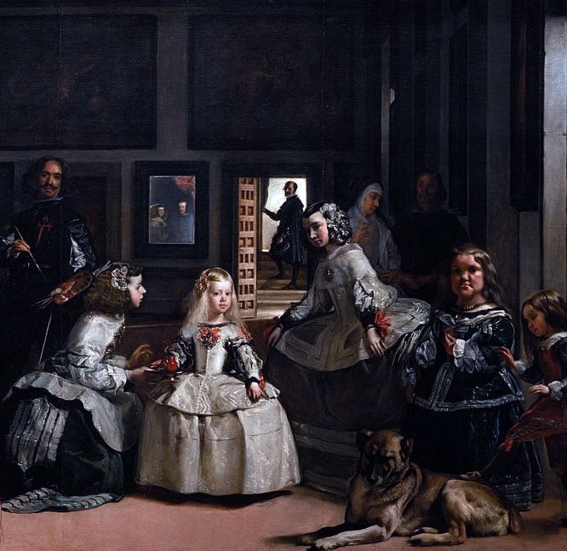
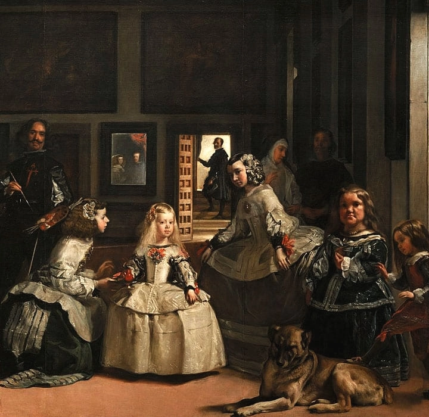

<section class="explore" id="explore">
    <div class="explore__container">
        <div>
            <div class="explore__title">PICTURE EXPLORE</div>
            <div class="explore__line"></div>
            <div class="explore__paragraf explore__paragraf-1">Las Meninas is a 1656 painting by Diego Velázquez, the leading artist of the Spanish Golden Age.</div>
            <div class="explore__paragraf explore__paragraf-2">It was cleaned in 1984 to remove a <span class="explore__words">"yellow veil"</span> of dust that had gathered since the previous restoration in the 19th century.</div>
            <div class="explore__paragraf explore__paragraf-3">The cleaning provoked furious protests, not because the picture had been damaged in any way, but because it looked different.</div>
        </div>
        <div class="explore__img">
            <div class="explore__img-relative">
                <div class="explore__div-yellow">
                    <canvas class="explore__yellow-div"></canvas>
                </div>
                
                <!-- 
                <canvas class="explore__canvas">
                    
                </canvas>-->
                
            </div>
        </div>
    </div>
</section>